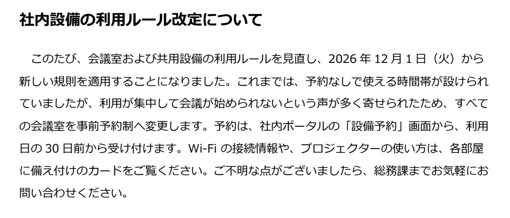
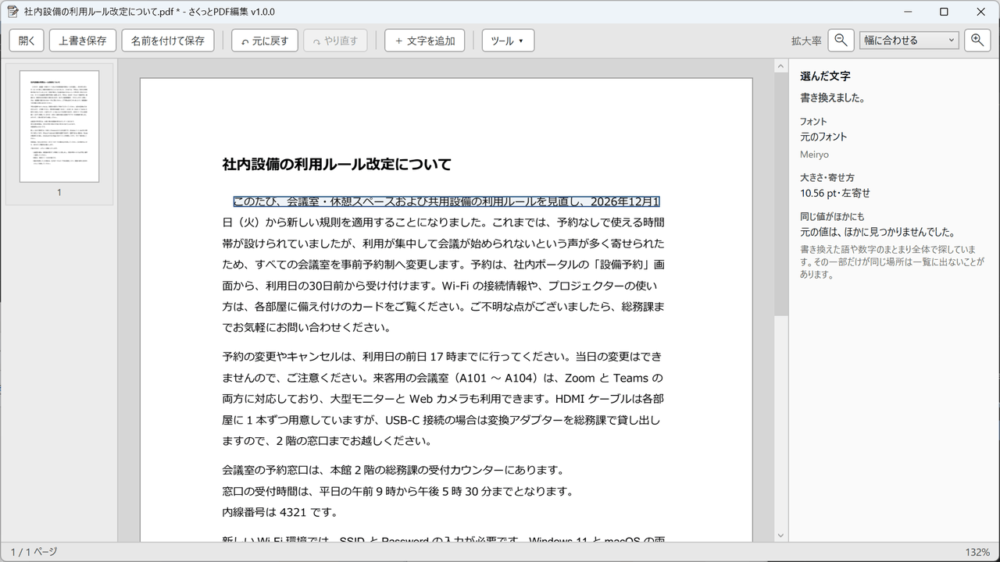

v1.0.0
- Microsoft Store で公開しました（文字の書き換え・追加・移動・削除・書式の変更・段落の折り返しと、9 つの PDF の道具）
誤字の修正、日付や名前の更新、ひな形の手直しに。打ち直した文字は、できるだけ元のフォントで書きます。書き換えた所の古い文字がファイルに残っていないかを確かめてから書き換えます。処理はすべて PC の中です。


2 枚は、同じ PDF の直す前と直した後です。
見本は、この説明のために作った架空の案内文です。さくっとPDF編集 1.0.0 で、段落の日付を直し、一文を足して保存しました。行は自動で折り返し直され、段落は 7 行のままです。アプリの画面は、下の「使い方」にあります。
Microsoft Store から購入して、すぐに使えます。アプリのアカウント登録はいりません。
まずPDF を開く
「開く」ボタンで選ぶか、窓に PDF をドラッグ＆ドロップ。左にページの一覧、真ん中にページ、右に選んだ文字の欄が出ます。

つぎにクリックして直す
直したい文字をクリックして選び、もう一度クリックすると、その場に入力欄が開きます。打ち直して Enter で確定、Esc で取り消し。表の右寄せの数字は、右端をそろえたまま書き換わります。

あとは別の名前で保存
保存の前に、直し忘れも確かめられます。書き換えた元の値（電話番号・日付など）がほかのページに残っていれば、右の欄にその場所が出ます。最初の保存では必ず保存先を聞きます。初めは元の名前に「_編集済み」を付けた名前が入っているので、元のファイルはそのまま残ります。

PDF を作ったときのファイルが手元に無くても、PDF のまま直せます。
文字をクリックして、その場で打ち直します。
何行かにわたる段落を、1 つの入力欄で直します。
ページの好きな場所に文字を書き込みます。
元からある文字も、足した文字も動かせます。
元からある文字の書式も変えられます。
間違えても、すぐ戻せます。
文書を失わない、黙って壊さない。そのための確かめを、書き換えと保存のたびに行います。
書き換えるたびに、書き換えた所の古い文字がファイルに残っていないか、ほかの文字が動いていないかを確かめます。
確かめきれないときは書き換えず、右の欄に理由を出します。文書は変わりません。
書き換えた元の値（電話番号・日付などのまとまり）が、ほかのページや注釈・しおりに残っていれば、その場所を出します。直し忘れの確認に。
最初の保存は必ず保存先を聞き、「_編集済み」を付けた名前で別に保存できます。元のファイルを上書きするのは、選んで確認したときだけです。
「ツール」から、ページをまとめる・分ける・整える作業もできます。
お手元の PDF を、作り直さずに直します。
作ったときのファイルが手元に無くても、PDF のまま直せます。
毎年使う案内やひな形を、新しい年度と担当者名に。元の言葉がほかに残っていれば、場所を知らせます。
段落の折り返しで、足した言葉は次の行へ、削ると次の行から上がってきます。
名前や日付を好きな場所に足して、そろえる線で位置を合わせられます。
ブラウザで使う編集サイトと違い、PDF をどこかにアップロードすることはありません。
開発元（Mojosoft）に PDF やファイル名が送られることはありません。アカウント登録も、利用状況の収集もありません。詳しくは プライバシーポリシー をご覧ください。
ご購入の前に、できること・できないことをご確認ください。
| 開けるファイル | PDF開くときにパスワードが要る PDF も、パスワードを入れて開けます。 |
|---|---|
| 編集できる文字 | 文字の情報を持つ PDF の、横書きの文字（パソコンのソフトで作った PDF など）。編集が制限された PDF は、編集パスワード（権限パスワード）を入れると編集できます。 |
| 編集できないもの |
|
| 書式 | フォント: 元のフォント・同梱のゴシック（Noto Sans JP）・明朝（Noto Serif JP）・欧文（Liberation Sans）・PC のフォント（PDF への埋め込みが許されたもの） 大きさ: 4〜96 pt ／ 色: 今の色・黒・赤・青太字・斜体の切り替えはありません。複数のまとまりをまとめて選ぶ・動かすことはできません。 |
| 段落の折り返し | 横書きで、左寄せ（両端そろえを含む）、1 つの書式で書かれた段落が対象です。書き直した行は左寄せになります。段落の下にある表や図は動かさないので、下に空きが無いと行を増やせません（理由を表示します）。折り返せない段落も、1 行ずつなら書き換えられます。 |
| 計算 | 表の数字を変えても、合計などは自動で計算し直しません。 |
| 保存 | 上書き保存（Ctrl+S）・名前を付けて保存（Ctrl+Shift+S）。最初の保存は必ず保存先を聞きます（初めは「_編集済み」を付けた名前）。パスワードのかかった PDF は、元のパスワードのまま、またはパスワードを外して保存できます。「元の言葉がほかに残っている場所」は、書き換えた語や数字のまとまりごとに探します。その一部だけが同じ場所は、一覧に出ないことがあります。 |
| 9 つの道具 | 結合・分割・ページの抜き出し・テキスト抽出・透かし・ページ番号・ヘッダー/フッター・パスワード・画像 ↔ PDFPDF → 画像: PNG・JPEG（72・150・300 dpi）／ 画像 → PDF: PNG・JPEG・BMP・GIF・TIFF |
| 表示言語 | 日本語・英語（Windows の言語設定に合わせて切り替わります） |
| 動作環境 | Windows 10（バージョン 2004）以降・64 ビット |
| 価格 | ¥2,980（買い切り・Microsoft Store） |
はい。日本語も英語も書き換えられます。できるだけ元のフォントで書き、元のフォントで書けない字があるときは、PC の同じフォントか、アプリに入っているフォント（Noto Sans JP など）で書いて、そのことを表示します。
はい。最初の保存では必ず保存先を聞き、元の名前に「_編集済み」を付けた名前が入っています。元のファイルを上書きするのは、自分で選んで確認したときだけです。
はい。何行かにわたる段落は、段落全体を 1 つの入力欄で直せて、足した言葉は次の行へ送られます。横書き・左寄せ（両端そろえを含む）・1 つの書式の段落が対象です。
はい。元からある文字も、足した文字も、ドラッグか矢印キーで動かせます。近くの文字の行や端にそろえる線が出ます。
はい。元に戻す（Ctrl+Z）で、1 回の操作を 1 回で戻せます。やり直す（Ctrl+Y）もあります。
はい。開くときのパスワードを入れて開けます。編集が制限された PDF は、編集パスワード（権限パスワード）を入れると編集できます。
はい。「ツール」から、結合・分割・ページの抜き出し・テキスト抽出・透かし・ページ番号・ヘッダー/フッター・パスワード・画像 ↔ PDF の 9 つの道具を使えます。
はい。処理はすべて PC の中で行います。
はい。Microsoft Store で一度購入すれば、月額料金なしで使い続けられます。
Microsoft Store 版は自動で最新版に更新されます。